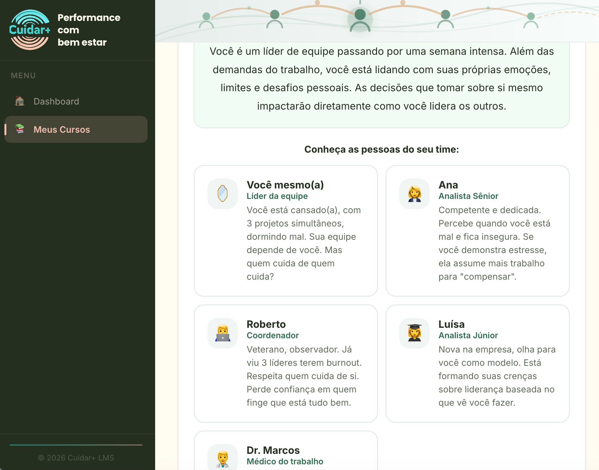
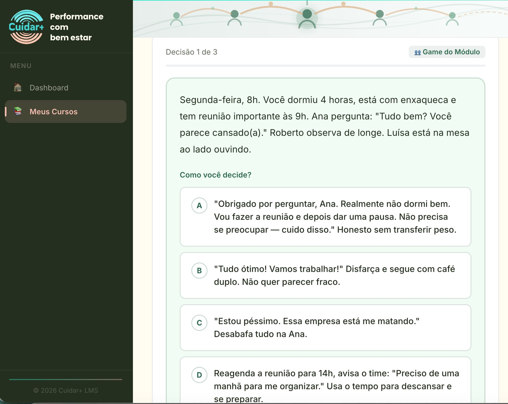
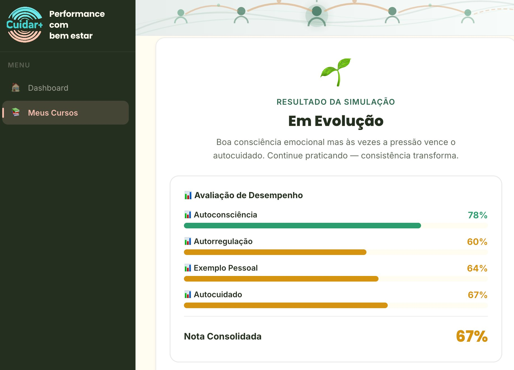

Do compliance à liderança consciente.
A metodologia sistêmica da Cuidar+ para integrar bem-estar e resultados de negócio.
"Não queremos apenas reduzir afastamentos. Queremos gerar performance, resultado e líderes conscientes."
Padrão de mercado
Palestras anuais. Ações pontuais. Cuidado desconectado da estratégia.
Programa Inspira
Jornada contínua. Digital + presencial. Bem-estar como alavanca de performance.
A profundidade que só o presencial entrega.
Imersões conduzidas pela Laís Cossermelli com 20+ anos em transformação cultural global em multinacionais.
Dinâmicas com casos reais do cotidiano corporativo. Construção de segurança psicológica. Escuta ativa. Internalização que nenhuma tela substitui.
Diagnóstico Inicial
Mapeamento dos riscos psicossociais por departamento. Base para a NR-1.
Treinamento Direcionado
Trilhas para líderes e colaboradores calibradas pelos dados do diagnóstico.
Imersão Híbrida Presencial + Digital
Vivências presenciais integradas à plataforma digital — ciclo O-2-O.
Monitoramento Ativo
Dashboards de engajamento e risco em tempo real para gestores e RH.
Certificação Final
Evidência comprovada de bem-estar, performance e conformidade NR-1.
Games de simulação com cenários reais de liderança.
O game coloca líderes em situações reais do dia a dia e mede como tomam decisões em 4 dimensões: Autoconsciência, Autorregulação, Exemplo Pessoal e Autocuidado.





Ações isoladas não transformam.
Liderança
Capacitação e consciência. Líderes que integram resultados com conexão humana genuína.
Colaboradores
Treinamento prático em saúde mental. Ferramentas reais para o dia a dia corporativo.
Cultura
Transformação do ambiente. Segurança psicológica como pilar sistêmico permanente.
RH
Ferramentas de gestão e monitoramento. Visibilidade estratégica para decisão com dados.
NR-1
Compliance e gestão de riscos psicossociais. Atendimento pleno às exigências regulatórias.
( Riscos + Líderes ) × Cultura
= Alta Performance Sustentável
O que diferencia o Inspira.
| Padrão de mercado | Programa Inspira | |
|---|---|---|
| Objetivo | Mitigação de danos (reduzir atestados) | Geração de valor e performance organizacional |
| Postura | Microgerenciamento e cobrança | Conexão humana integrada aos resultados |
| Formato | Palestras anuais pontuais | Jornada contínua — digital + presencial |
| NR-1 | Evitar multas trabalhistas | Excelência ativa e mapeamento real de riscos |
Conheça a metodologia em detalhes.
Apresentamos como o Inspira pode ser aplicado ao contexto específico da sua empresa.